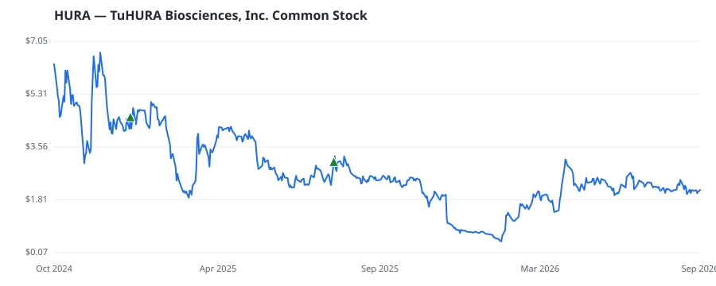

bullish · bearish · n/a — dots: price>SMA10 · SMA10>SMA50 · SMA50>SMA200 · up>down volume (20d)
Pharmaceuticals & Biotech · micro cap · ★ 1 buyer(s) sit on a committee that regulates this industry
Members who bought HURA earned a dollar-weighted -12.2% from their disclosure dates, versus +21.2% for the S&P 500 over the same holding windows (-33.4% alpha).

▲ green = a disclosed purchase · ▼ red = a disclosed sale (plotted on disclosure date)
TuHURA Biosciences Inc is a phase 3 clinical stage immuno-oncology company with three distinct technologies focused on the development of novel therapeutics designed to overcome primary and acquired resistance to cancer immunotherapies. The company's personalized cancer vaccine candidate, IFx-2.0, is designed to overcome primary resistance to checkpoint inhibitors. The company operates in one reportable segment, which includes all activities related to advancing therapies for cancer treatment. PHARMACEUTICAL PREPARATIONS · website
| Revenue | $0 | Net income | $-30.1M |
|---|---|---|---|
| Operating income | — | Diluted EPS | $-0.63 |
| Assets | $27.4M | Equity | $20.9M |
| Member | Chamber | Out-performer | Disclosed buys $ | Return on buys |
|---|---|---|---|---|
| Laurel Lee ★ | house | — | $83K | -12.2% |
Disclosed $ figures are bracket midpoints — filings report ranges (e.g. $1,001–$15,000), not exact amounts.
| Fund | Fund alpha vs SPY | Position | % of book |
|---|---|---|---|
| Merck & Co., Inc. | +211% | $0M | 0.0% |
Hedge data: SEC EDGAR 13F · ranked funds beat SPY in >50% of their quarters · fund alpha = mirror-portfolio return minus SPY.